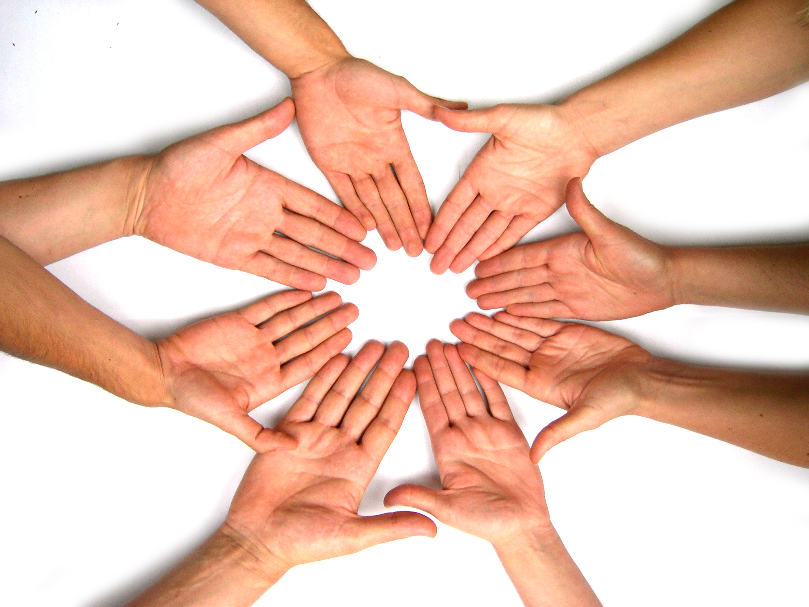
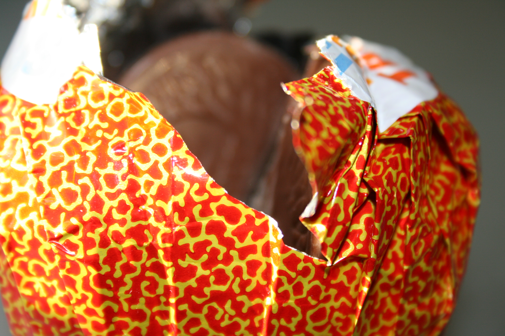
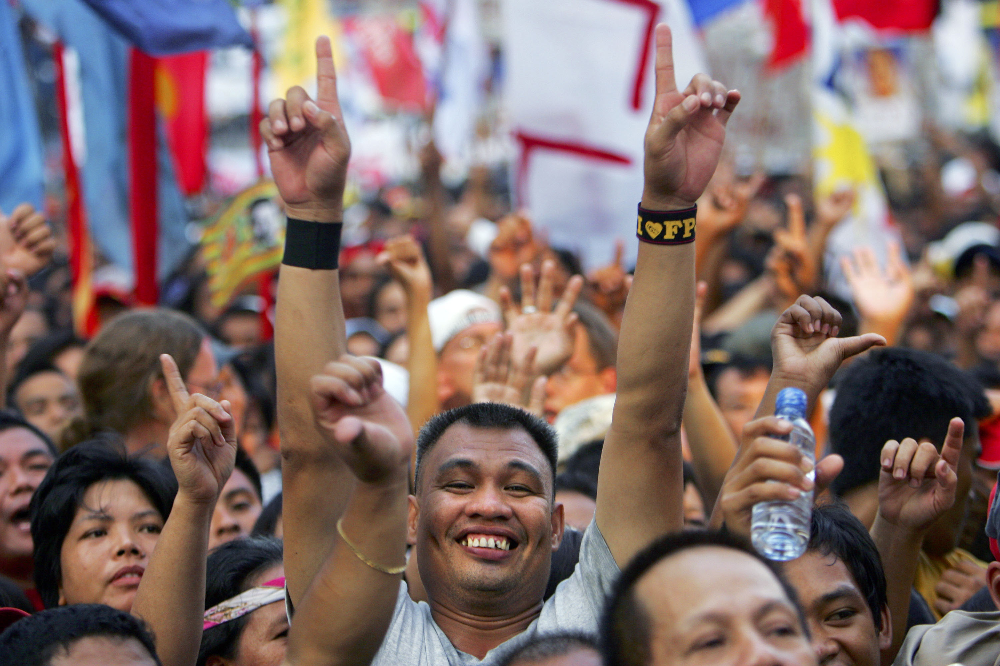

Le temps passe vite, à 20 ans on veut changer le monde. À 40 ans, les promesses du capitalisme s’évanouissent, laissant place au désenchantement. À la faveur d’un licenciement, après six ans d’errance professionnelle, on prend conscience de l’ampleur du problème : un système en crise, aliénant nos vies et détruisant la nature.
Mon engagement à la CGT aux côtés des travailleurs précaires et mon retour à la campagne, loin du consumérisme des villes, m’ont permis de reconnecter à l’essentiel. Ce retour salutaire du réel m’a permis d’imaginer une autre voie, plus solidaire et écologique.
Appelons cette voie, l’affranchisme, une idéologie révolutionnaire qui vise l’émancipation du marché capitaliste par l’autosuffisance de ses coopératives. Ce modèle décentralisé d’autogestion, non violente mais radicale, remplace la compétition capitaliste par la coopération.
Cette révolution systémique et silencieuse, fait primer l’universel sur le global et satisfait les besoins essentiels par des communs non marchands. Partout, des gens ordinaires s’organisent, à leur échelle, pour reprendre le pouvoir. Leurs initiatives sont souvent méconnues mais en pleine croissance.
Il ne leur manque qu’une meilleure coordination et une véritable stratégie de substitution au marché capitaliste.
Cet appel expose les failles du capitalisme, les solutions de l’affranchisme et leurs défis. Il offre les clés d’une société humaine, solidaire, respectueuse de la planète, redonnant sens à nos vies.
Diffusez-le et rejoignez la révolution pacifique ! Premier pas : partagez vos idées sur les réseaux sociaux (#affranchisme2025).
Nos sociétés occidentales regorgent de poubelles pleines de nourriture et de centres commerciaux soldant des vêtements jetables, pendant que d’autres peinent à survivre. Le capitalisme privilégie la quantité à la qualité, produisant des biens d’abord utiles à son développement. Il en résulte une surproduction uniforme motivée par le profit, éclipsant les spécificités locales, les besoins essentiels comme la santé, le logement ou le lien social, et transformant les écosystèmes naturels. Les petits commerces ferment, les identités culturelles s’effacent. La frénésie consumériste, de la fast fashion au click-and-go, privilégie le plaisir immédiat, l’addiction à la nouveauté, au détriment de la réflexion et du temps long. S’ensuit une perte de sens dramatique pour nos sociétés où une consommation très inégale, minimise la solidarité et l’épanouissement. La mondialisation, en intensifiant la précarité et la fuite des capitaux, contribue à des réflexes individualistes et à la baisse de l’engagement dans les organisations solidaires comme les syndicats. Cette dynamique s’accompagne d’une hausse des burn-outs et des accidents du travail, ainsi que d’un recul de la conscience de classe.
Paradoxalement, plus le mondialisme exacerbe les tensions sociales, plus le syndicalisme peine à fédérer les travailleurs. En France, le nombre de syndiqués a chuté d’environ 5 millions en 1945 à 1,6 million en 2025, malgré une multiplication des centrales syndicales comme la CFDT, FO ou Sud-Solidaires. Le mondialisme et son idéologie néolibérale, promeut via les médias mainstream un discours où la "liberté" se réduit à surconsommer, souvent à crédit, une surproduction délocalisée, tout en donnant l’illusion d’un choix. L’affranchisme appelle à la révolte et prône une réappropriation du temps et des communs pour refonder une société fragmentée par un individualisme exacerbé.
Rejoignons une AMAP ou un syndicat pour défendre le bien commun !
A la Révolution française, la bourgeoisie à travers l’État, balaie les corporatismes monarchiques et s’approprie le marché. Les travailleurs précaires s’y retrouvent isolés et livrés à une prédation de ressources, ne pouvant plus racheter leur propre moyen de production et abandonnant progressivement leur statut de producteur à la machine, puis plus tard, au Sud global. Les barrières d’entrée au marché créent des tensions pour trouver les capitaux, obligeant à s’endetter et favorisant la compétition plutôt que la coopération. Mais le financement d’une telle économie par la dette, se paye généralement, en crises systémiques. De la première bulle spéculative avec la crise des tulipes (1637) à la crise covid (2020), l’État va progressivement se porter au secours du système financier, sur le principe du « too big too fail » popularisé, par la crise de 2008. Cela a renforcé les banques dans leur rôle de tiers de confiance dans les échanges, malgré un poids écrasant sur les marchés. Leur activité a permis le bond technologique et productif dans internet que l’on connaît, et la naissance de géants du web, qui rachètent tous les concurrents sérieux. Leurs plateformes traquent nos données pour des publicités ciblées, marchandisent nos désirs et s’ingèrent dans notre vie publique et privée. Parallèlement, l’entreprise et l’état ont embrassé la digitalisation pour optimiser leur productivité. Cependant, cette transition numérique a donné les plus grandes fuites de données personnelles de l’histoire (France Travail (2024), piratage de comptes Google, Facebook ou Apple (2025)), etc.... Le capitalisme montre son incapacité à sécuriser et à contrôler sa propre innovation. Les échanges s’accélèrent et se segmentent, complexifiant le marché et fragilisant autant les chaînes d’approvisionnement que le statut des travailleurs. Les produits passent par plusieurs intermédiaires, qui accumulent une part de la richesse produite, au détriment du consommateur final. L’affranchisme offre une véritable rupture face aux dérives de cette nouvelle caste de privilégiés, que sont les mondialistes. Il canalise le moteur énergivore d’un progrès qui s’emballe, pour servir le bien commun. Il propose de réduire les intermédiaires en relocalisant la production, et de décentraliser les institutions pour redonner aux travailleurs le contrôle sur leur moyen de production, contrairement à ce système qui protège la finance.
Investissons nos marchés locaux et créons notre réseau de coopératives affranchistes !
Le capitalisme est un peu comme une équipe d’individualités payés des millions pour gagner un match de foot. Opposons lui, une groupe qui vit bien et qui compense son manque de moyen par son collectif. L’affranchisme forme le socle d’une société juste et harmonieuse, tissant un réseau de solidarité à travers l’espace, le temps et le sens. En fédérant des dispositifs et en harmonisant les synergies, comme le prônait Kropotkine, il surpasse l’assemblage chaotique du capitalisme par une cohésion solidaire. Certains dispositifs sont peut-être à côté de chez vous:
Nous sommes à un moment clé de notre histoire, les crises capitalistes (climat, inégalités) vont fragiliser les institutions, ouvrant la voie au totalitarisme ou à l’affranchisme...
Créons notre marché coopératif et proposons à nos coopératives et associations locales de participer à la charte affranchiste !

Partagez vos idées pour l’affranchisme